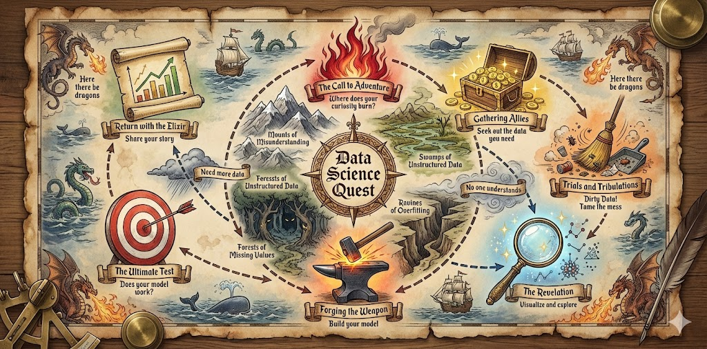

Introduction to Data Science
Summary
This chapter introduces the foundational concepts of data science, establishing the vocabulary and mental models needed for the rest of the course. Students will learn what data science is, understand the data science workflow from problem definition to data collection, and master the different types of data and measurement scales. By the end of this chapter, students will be able to identify variables, distinguish between independent and dependent variables, and understand the structure of datasets.
Concepts Covered
This chapter covers the following 20 concepts from the learning graph:
- Data Science
- Data
- Variables
- Data Types
- Numerical Data
- Categorical Data
- Ordinal Data
- Nominal Data
- Measurement Scales
- Independent Variable
- Dependent Variable
- Dataset
- Observation
- Feature
- Target Variable
- Data Science Workflow
- Problem Definition
- Data Collection
- Python Programming
- Documentation
Prerequisites
This chapter assumes only the prerequisites listed in the course description. No prior data science knowledge is required.
Welcome to Your Data Science Origin Story
Every superhero has an origin story. Spider-Man got bitten by a radioactive spider. Iron Man built a suit in a cave. You? You're about to unlock something even more powerful—the ability to see patterns in chaos, predict the future from the past, and make decisions that actually make sense. Welcome to data science, your new superpower.
Here's the thing: we live in a world absolutely drowning in data. Every swipe, click, purchase, and late-night snack run generates information. Most people just swim through this ocean without a second thought. But data scientists? They're the ones who can read the currents, spot the hidden treasure, and navigate to exactly where they want to go.
By the end of this book, you'll be able to:
- Predict trends before they happen
- Find patterns nobody else can see
- Build models that learn from experience
- Make decisions backed by evidence, not just gut feelings
Sound like a superpower? That's because it is.
Data Science Superpower Concept Map
What Exactly Is Data Science?
Data science is the art and science of extracting meaningful insights from data. It combines statistics, computer programming, and domain expertise to answer questions, solve problems, and predict outcomes. Think of it as being a detective, mathematician, and storyteller all rolled into one.
But wait—isn't that just statistics? Or computer science? Or business analytics? Here's what makes data science special: it's all of those things working together. A statistician might crunch numbers. A programmer might write code. A business analyst might make recommendations. A data scientist does all three, often before lunch.
| Role | Primary Focus | Data Scientist's Take |
|---|---|---|
| Statistician | Mathematical analysis | "I use stats AND make it work in code" |
| Programmer | Building software | "I code AND understand what the numbers mean" |
| Business Analyst | Strategic recommendations | "I advise AND prove it with evidence" |
| Data Scientist | All of the above | "I do it all—and make it look easy" |
The best part? Data science isn't just for tech companies. Hospitals use it to save lives. Sports teams use it to win championships. Musicians use it to create hit songs. Even farmers use it to grow better crops. Whatever you're passionate about, data science can make you better at it.
Understanding Data: The Raw Material of Your Power
Before you can wield your new superpower, you need to understand its source: data. Data is simply recorded information. It's the raw material that, when processed correctly, becomes insight, knowledge, and wisdom.
Data is everywhere. Right now, your phone is collecting data about your location, battery level, and which apps you use most. Your school tracks data about attendance, grades, and lunch purchases. Even your heartbeat generates data that a smartwatch can record.
Here's a mind-bending thought: by the time you finish reading this sentence, the world will have generated approximately 2.5 quintillion bytes of new data. That's 2,500,000,000,000,000,000 bytes. Every. Single. Day.
Data Science Superpower Tip
The difference between ordinary people and data scientists isn't access to data—everyone has that now. It's knowing what to DO with data that makes you powerful.
But not all data is created equal. Some data is clean and ready to use. Some is messy and needs work. Some is numerical, some is categorical. Understanding these differences is your first step toward data science mastery.
Variables: The Building Blocks of Data
In data science, we organize data using variables. A variable is any characteristic, number, or quantity that can be measured or counted. Variables are called "variables" because they vary—they can take on different values.
Think about describing your classmates. You might note:
- Their height (a number that varies from person to person)
- Their eye color (a category that varies)
- Their grade level (a rank that varies)
- Their student ID (a unique identifier that varies)
Each of these is a variable. And here's where it gets interesting: the TYPE of variable determines what you can do with it.
Diagram: Variable Types Decision Tree
Run the Variable Types Decision Tree Fullscreen
Variable Types Decision Tree
Type: workflow
Bloom Taxonomy: Apply (L3)
Learning Objective: Enable students to correctly classify any variable they encounter into its proper type
Purpose: Guide students through identifying variable types with a simple decision tree
Visual style: Flowchart with decision diamonds and endpoint rectangles
Starting point: "What kind of variable is this?"
Decision 1: "Can you do math with it?" - YES → "NUMERICAL DATA" path - NO → "CATEGORICAL DATA" path
NUMERICAL path continues: Decision 2: "Can it be any value (including decimals)?" - YES → Endpoint: "Continuous" (example: height = 5.7 feet) - NO → Endpoint: "Discrete" (example: number of siblings = 2)
CATEGORICAL path continues: Decision 3: "Is there a meaningful order?" - YES → Endpoint: "Ordinal" (example: grade levels Freshman < Senior) - NO → Endpoint: "Nominal" (example: eye color - no order)
Color coding: - Decision diamonds: Yellow - Numerical endpoints: Blue - Categorical endpoints: Green - Examples: Gray italic text
Interactive elements: - Hover over each endpoint to see 3 more examples - Click "Test Yourself" button to get a random variable to classify
Implementation: HTML/CSS/JavaScript flowchart
The Four Types of Data
Let's break down the data types you'll encounter. Mastering these is like learning to identify different materials—you wouldn't use the same technique on wood as you would on metal.
Numerical Data
Numerical data consists of numbers that represent quantities. You can perform mathematical operations on numerical data—add it, subtract it, find averages, and more.
Numerical data comes in two flavors:
- Continuous: Can take ANY value within a range (height, temperature, time)
- Discrete: Can only take specific values, usually whole numbers (number of pets, test score out of 100)
Categorical Data
Categorical data represents groups or categories. You can't do math with it in the traditional sense—what's the average of "blue" plus "green"? Exactly.
Categorical data also comes in two flavors:
- Nominal data: Categories with NO inherent order (colors, countries, types of music)
- Ordinal data: Categories WITH a meaningful order (rankings, satisfaction levels, education levels)
Here's a handy comparison:
| Data Type | Can Do Math? | Has Order? | Examples |
|---|---|---|---|
| Numerical (Continuous) | Yes | Yes | Height, Weight, Temperature |
| Numerical (Discrete) | Yes | Yes | Age in years, Number of friends |
| Categorical (Ordinal) | No* | Yes | Star ratings, T-shirt sizes (S, M, L) |
| Categorical (Nominal) | No | No | Favorite color, Country of birth |
*You can count ordinal categories and find modes, but traditional arithmetic doesn't apply.
Measurement Scales: Precision Levels for Your Data
Measurement scales describe the precision and type of information a variable provides. Think of them as different levels of detail, like the difference between knowing someone is "tall" versus knowing they're "exactly 6 feet 2 inches."
There are four measurement scales, from least to most informative:
- Nominal: Names or labels only (no order, no math)
- Ordinal: Ordered categories (rankings exist, but intervals aren't equal)
- Interval: Equal intervals, but no true zero (temperature in Celsius)
- Ratio: Equal intervals WITH a true zero (height, weight, age)
Why Does This Matter?
Knowing your measurement scale determines which analyses you can perform. You can calculate a mean height (ratio scale), but you can't calculate a "mean favorite color" (nominal scale). Using the wrong analysis on the wrong scale is like trying to measure your height with a thermometer—technically using a measurement tool, but completely useless.
Diagram: Measurement Scales Pyramid
Measurement Scales Pyramid
Type: infographic
Bloom Taxonomy: Remember (L1)
Learning Objective: Help students remember the four measurement scales and what operations each allows
Purpose: Visualize measurement scales as a hierarchy where each level adds capabilities
Layout: Pyramid with four layers, widest at bottom
Layers (bottom to top): 1. NOMINAL (base, widest) - Operations: = ≠ (equality only) - Example: "Jersey numbers" - Color: Light gray
- ORDINAL
- Operations: = ≠ < > (equality + ordering)
- Example: "Race finishing positions"
-
Color: Light blue
-
INTERVAL
- Operations: = ≠ < > + - (add equal intervals)
- Example: "Temperature in Fahrenheit"
-
Color: Light green
-
RATIO (top, narrowest)
- Operations: = ≠ < > + - × ÷ (full arithmetic)
- Example: "Height in centimeters"
- Color: Gold (representing "gold standard")
Side annotations: - Arrow pointing up: "More mathematical operations possible" - Arrow pointing down: "More variables fit this category"
Interactive elements: - Hover over each level to see 5 example variables - Click to see which statistical tests are appropriate for each level
Visual style: 3D pyramid with glowing edges, game achievement aesthetic
Implementation: CSS 3D transforms or SVG
Diagram: Variable Type Sorter
Run the Variable Types Sorter Fullscreen
Independent and Dependent Variables: Cause and Effect
Now we get to one of the most important concepts in all of science: the relationship between independent variables and dependent variables.
The independent variable is what you change or control in an experiment. It's the "cause" in cause-and-effect. The dependent variable is what you measure—it "depends" on the independent variable. It's the "effect."
Here's an easy way to remember:
- Independent = "I change this" (I for Independent)
- Dependent = "This depends on what I changed"
Real-world examples:
| Scenario | Independent Variable | Dependent Variable |
|---|---|---|
| Studying for a test | Hours studied | Test score |
| Growing plants | Amount of sunlight | Plant height |
| Running a business | Advertising budget | Sales revenue |
| Video game practice | Hours played | Skill level |
Understanding this relationship is HUGE. It's the foundation of prediction. If you know how an independent variable affects a dependent variable, you can predict outcomes. That's literally seeing the future.
Diagram: Independent vs Dependent Variable MicroSim
Study Time vs Test Score Simulator
Type: microsim
Bloom Taxonomy: Apply (L3)
Learning Objective: Let students experiment with changing an independent variable and observe how the dependent variable responds, building intuition for cause-and-effect relationships
Canvas layout (700x450px): - Main area (500x400): Scatter plot visualization - Right panel (200x400): Controls and stats
Visual elements: - Scatter plot with "Hours Studied" on X-axis (0-10 hours) - "Test Score" on Y-axis (0-100 points) - Data points appear as student emoji icons - Trend line showing relationship - Confidence band around trend line
Interactive controls: - Slider: "Add Student" - Click to add a new random data point - Slider: "Relationship Strength" (0-100%) - Controls how predictable scores are from study time - Button: "Generate Class of 30" - Creates realistic dataset - Button: "Clear All" - Reset visualization - Toggle: "Show Trend Line" - Display/hide regression line - Toggle: "Show Prediction" - Highlight predicted vs actual
Display stats: - Number of students - Average study time - Average test score - Correlation strength (with emoji: 💪 strong, 🤷 weak)
Default parameters: - Relationship strength: 70% - Start with 10 sample students - Trend line visible
Behavior: - When relationship strength is high, points cluster tightly around trend line - When strength is low, points scatter widely (more randomness) - Clicking on the plot shows "If you study X hours, you'd expect a score around Y" - Fun messages appear: "Whoa, that student beat the odds!" for outliers
Educational message displayed: "The INDEPENDENT variable (study time) is what you control. The DEPENDENT variable (test score) is what you measure. Notice: More study time TENDS to mean better scores, but there's always variation!"
Implementation: p5.js with simple linear regression
Datasets: Your Data Organized and Ready
A dataset is a structured collection of data, organized in a way that makes analysis possible. Think of it as a spreadsheet with rows and columns, where each row is one observation and each column is one variable.
An observation (also called a record or instance) is a single unit of data. If you're collecting data about students, each student is one observation. If you're tracking daily weather, each day is one observation.
Here's what a simple dataset looks like:
| Student ID | Name | Hours Studied | Test Score | Grade Level | Favorite Subject |
|---|---|---|---|---|---|
| 001 | Alex | 3.5 | 82 | Junior | Math |
| 002 | Jordan | 5.0 | 91 | Senior | Science |
| 003 | Sam | 2.0 | 74 | Junior | Art |
| 004 | Taylor | 4.5 | 88 | Senior | History |
In this dataset:
- Each row is one observation (one student)
- Each column is one variable
- We have 4 observations and 6 variables
Features and Target Variables: Setting Up for Prediction
When we're building predictive models, we use special terms for our variables:
Features (also called predictors or input variables) are the variables we use to make predictions. They're the information we feed INTO our model.
The target variable (also called the outcome, response, or label) is what we're trying to predict. It's the OUTPUT of our model.
Using our student example:
- Features: Hours Studied, Grade Level, Favorite Subject
- Target Variable: Test Score (what we want to predict)
Feature vs. Target: A Sports Analogy
Imagine predicting which team will win a game. Your features might be: each team's win record, star player stats, home vs. away, and weather conditions. Your target variable is the game outcome (win/lose). Features are your clues; the target is what you're solving for.
Here's how features and targets relate to independent/dependent variables:
| Predictive Modeling Term | Experimental Term | Role |
|---|---|---|
| Features | Independent Variables | Input to model |
| Target Variable | Dependent Variable | Output to predict |
The Data Science Workflow: Your Hero's Journey

Every great hero follows a journey, and data scientists are no different. The data science workflow is your roadmap from "I have a question" to "I have an answer (with evidence)."
The workflow has several key stages:
- Problem Definition: What question are you trying to answer?
- Data Collection: Gathering the information you need
- Data Cleaning: Fixing errors and handling missing information
- Exploratory Analysis: Getting to know your data through visualization
- Modeling: Building mathematical representations to make predictions
- Evaluation: Testing how well your model works
- Communication: Sharing your findings with others
Data Science Workflow Hero's Journey
Problem Definition: Starting Your Quest
Problem definition is where every data science project begins. Before you touch any data, you need a clear question. Vague questions lead to vague answers (or worse, wrong answers).
Bad problem definitions:
- "I want to analyze data" (About what? Why?)
- "Make me a machine learning model" (To do what?)
- "Find something interesting" (That's not a question!)
Good problem definitions:
- "Which factors most influence student test performance?"
- "Can we predict which customers will cancel their subscription?"
- "How does weather affect daily bike rental demand?"
The difference? Good questions are specific, measurable, and actionable.
Data Collection: Gathering Your Resources
Data collection is the process of gathering the information you need to answer your question. Data can come from many sources:
- Surveys and forms: Directly asking people questions
- Sensors and devices: Automatic measurements (temperature, motion, etc.)
- Databases: Stored records from transactions, events, or activities
- Web scraping: Automatically extracting data from websites
- APIs: Requesting data from other software systems
- Experiments: Controlled tests you design and run
Data Collection Reality Check
Here's a secret professionals don't always tell you: data collection is often the HARDEST part. The data you want might not exist. The data you can get might be messy. You might need permission you don't have. Real data science is 80% wrestling with data and 20% building cool models.
Python Programming: Your Superpower Tool
If data science is your superpower, then Python programming is your utility belt. Python is a programming language that's become the go-to tool for data scientists worldwide.
Why Python? Several reasons:
- Readable: Python code looks almost like English
- Powerful libraries: Tools like pandas, NumPy, and matplotlib do the heavy lifting
- Huge community: Millions of users means tons of help and resources
- Free and open source: No expensive licenses required
- Versatile: Works for data analysis, web apps, automation, and more
Here's a sneak peek at what Python code looks like:
1 2 3 4 5 6 7 8 9 10 | |
Don't worry if this looks foreign right now. By the end of this course, you'll be writing code like this in your sleep.
Documentation: Recording Your Journey
Documentation is the practice of recording what you did, why you did it, and what you learned. It might sound boring, but trust me—future you will thank present you for good documentation.
Documentation serves several purposes:
- Memory aid: You WILL forget what you did three weeks ago
- Collaboration: Others need to understand your work
- Reproducibility: Science requires that results can be replicated
- Debugging: Finding errors is easier when you know what you did
- Portfolio: Documentation becomes proof of your skills
Good documentation includes:
- Clear comments in your code
- Explanation of your reasoning and decisions
- Notes about data sources and limitations
- Visualizations of key findings
- Summary of results and conclusions
The Superhero's Journal
Even Batman keeps records in the Batcomputer. Your documentation is your version of this—a record of your adventures, discoveries, and hard-won knowledge. Start good habits now, and you'll stand out as a professional later.
Putting It All Together: Your Data Science Toolkit
Congratulations! You've just acquired the foundational vocabulary of data science. Let's recap your new powers:
Core Concepts:
- Data Science: Extracting insights from data using statistics, programming, and domain expertise
- Data: Recorded information that serves as raw material for analysis
- Variables: Characteristics that can take different values
- Data Types: Numerical (continuous, discrete) and Categorical (nominal, ordinal)
- Measurement Scales: Nominal → Ordinal → Interval → Ratio
Relationships:
- Independent Variable: What you change (the cause)
- Dependent Variable: What you measure (the effect)
- Features: Input variables for prediction
- Target Variable: What you're trying to predict
Structure:
- Dataset: Organized collection of data
- Observation: Single data point (one row)
- Data Science Workflow: Problem → Collect → Clean → Explore → Model → Evaluate → Communicate
Tools:
- Python Programming: Your primary weapon for data analysis
- Documentation: Your record of the journey
Diagram: Chapter 1 Concept Mind Map
Introduction to Data Science Concept Map
Type: graph-model
Bloom Taxonomy: Analyze (L4)
Learning Objective: Help students see how all concepts from Chapter 1 connect and relate to each other
Purpose: Visual summary showing relationships between all 20 concepts covered
Node types: 1. Core Concept (large gold circles) - Data Science, Data, Variables, Dataset
- Data Types (medium blue squares)
-
Numerical Data, Categorical Data, Ordinal Data, Nominal Data
-
Variable Roles (medium green diamonds)
-
Independent Variable, Dependent Variable, Feature, Target Variable
-
Workflow (medium purple hexagons)
-
Data Science Workflow, Problem Definition, Data Collection
-
Tools & Practices (medium orange rectangles)
-
Python Programming, Documentation
-
Structure (medium teal triangles)
- Measurement Scales, Observation
Edge types: 1. "is a type of" (solid gray) - e.g., Numerical → Data Types 2. "contains" (dashed blue) - e.g., Dataset → Observation 3. "uses" (dotted green) - e.g., Data Science → Python Programming 4. "same as" (double line) - e.g., Feature ↔ Independent Variable
Layout: Hierarchical with Data Science at top
Key relationships: - Data Science → Data (works with) - Data → Variables (organized into) - Variables → Data Types (classified by) - Data Types → splits to Numerical and Categorical - Numerical/Categorical → further subtypes - Variables → splits to Independent/Dependent - Feature = Independent Variable (in prediction context) - Target Variable = Dependent Variable (in prediction context) - Data Science Workflow → Problem Definition → Data Collection - Data Science → Python Programming (implemented using) - All activities → Documentation (recorded through)
Interactive features: - Hover: Show concept definition - Click: Highlight all connected concepts - Double-click: Expand to show examples - Filter buttons: Show only certain node types
Visual styling: - Node size reflects importance (centrality) - Edge thickness reflects strength of relationship - Animated pulses along edges when hovering
Implementation: vis-network JavaScript library Canvas size: 800x600px
What's Next?
You've completed your origin story. You understand what data science is, how data is organized, and the workflow you'll follow on every project. You've met Python, your trusty sidekick.
But here's the exciting part: this is just the beginning. In the chapters ahead, you'll:
- Set up your Python environment and write your first code
- Load real datasets and explore them hands-on
- Create beautiful visualizations that tell stories
- Learn statistical techniques that reveal hidden patterns
- Build models that actually predict the future
- And ultimately, complete a capstone project that showcases your new superpowers
The world needs more people who can make sense of data. It needs people who can separate signal from noise, truth from fiction, and insight from confusion. By the time you finish this book, you'll be one of those people.
Ready to continue your training?
Chapter 1 Checkpoint: Test Your Understanding
Question: A researcher collects data on students including their GPA (0.0-4.0), major (Biology, Chemistry, Physics), year in school (Freshman through Senior), and number of classes taken. Classify each variable by its data type and measurement scale.
Click to reveal answer:
- GPA: Numerical (continuous), Ratio scale
- Major: Categorical (nominal), Nominal scale
- Year in school: Categorical (ordinal), Ordinal scale
- Number of classes: Numerical (discrete), Ratio scale
Key Takeaways
-
Data science is your superpower—it combines statistics, programming, and domain knowledge to extract insights from data.
-
Data is everywhere, and understanding its types (numerical vs. categorical, ordinal vs. nominal) determines what you can do with it.
-
Variables are the building blocks of data, and knowing the difference between independent and dependent variables is crucial for understanding cause and effect.
-
Datasets organize data into rows (observations) and columns (variables), making analysis possible.
-
The data science workflow is your hero's journey: define the problem, collect data, clean it, explore it, model it, evaluate it, and communicate your findings.
-
Python is your primary tool, and documentation is how you record your journey for yourself and others.
Now turn the page and let's set up your Python environment. Your training continues!